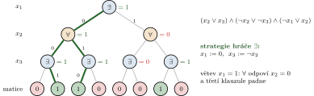
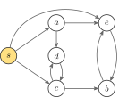
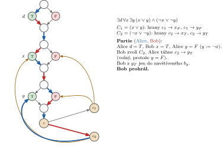
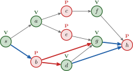
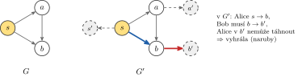

13.6 Úlohy navíc¶
Úlohy procvičují vyhodnocení kvantifikované formule a její čtení jako hry (oddíly 13.1 a 13.2), hru \(\href{sec-geografie.html#prob-gg}{\class{woo-pk-prob-gg}{\prob{Generalized Geography}}}\) a redukci \(\href{ch-pspace-tqbf.html#prob-tqbf}{\class{woo-pk-prob-tqbf}{\prob{TQBF}}}\mathrel{\href{../ch-redukce/ch-redukce-jak-porovnat-slozitost-dvou-problemu.html#def-redukce}{\class{woo-pk-def-redukce}{\redp}}}\href{sec-geografie.html#prob-gg}{\class{woo-pk-prob-gg}{\prob{GG}}}\) (oddíl 13.3) a argument „rekurze polynomiální hloubky = polynomiální prostor“, na kterém stojí každé tvrzení typu „… je v \(\href{../ch-prostor/ch-prostor-prostorove-tridy.html#def-prostor}{\class{woo-pk-def-prostor}{\PSPACE}}\)“.
Neoficiální úlohy
Úlohy v tomto oddílu nejsou oficiální zadání předmětu. Jsou to procvičovací úlohy navíc k látce kapitoly; pravdivostní hodnoty formulí, vítěze všech her a obě nové redukce jsme ověřili krátkými programy (rekurzivní vyhodnocení QBF a hry, srovnání redukce s hrubou silou na stovkách náhodných instancí), důkazy jsme prošli ručně.
13.6.1 Rozcvička¶
Úloha 13.1 (vyhodnoť QBF a přečti ji jako hru)
Rozhodněte, které z formulí jsou pravdivé. U každé řekněte, který hráč (\(\exists\), nebo \(\forall\)) má vítěznou strategii, a strategii popište.
- \(\Psi_a=\forall x\,\exists y:\ (x\lor y)\land(\lnot x\lor\lnot y)\),
- \(\Psi_b=\exists y\,\forall x:\ (x\lor y)\land(\lnot x\lor\lnot y)\),
- \(\Psi_c=\exists x_1\,\forall x_2\,\exists x_3:\ (x_2\lor x_3)\land(\lnot x_2\lor\lnot x_3)\land(\lnot x_1\lor x_2)\). Nakreslete strom vyhodnocení a vyznačte v něm vítěznou strategii.
Řešení
Matice v a), b). Klauzule \((x\lor y)\) říká „aspoň jedna z \(x,y\) je 1“, klauzule \((\lnot x\lor\lnot y)\) „aspoň jedna je 0“. Dohromady: matice je pravdivá \(\iff x\neq y\).
a) Pravdivá. Vyhodnotíme stromem jako v oddílu 13.1.1. Pro \(x=0\) dá uzel \(\exists y\) hodnotu \(\mathrm{OR}(0,1)=1\) (při \(y=1\) je \(x\neq y\)), pro \(x=1\) hodnotu \(\mathrm{OR}(1,0)=1\). Kořen \(\forall x\) dá \(\mathrm{AND}(1,1)=1\). Vítěznou strategii má \(\exists\): \(y:=\lnot x\) – hráč \(\exists\) táhne až po \(\forall\), a proto smí na jeho volbu reagovat.
b) Nepravdivá. Teď \(\exists\) volí \(y\) dřív, než \(\forall\) zvolí \(x\). Pro \(y=0\) dá uzel \(\forall x\) \(\mathrm{AND}(0,1)=0\) (při \(x=0\) je \(x=y\)), pro \(y=1\) dá \(\mathrm{AND}(1,0)=0\). Kořen \(\exists y\): \(\mathrm{OR}(0,0)=0\). Vítěznou strategii má \(\forall\): \(x:=y\) (zopakuje volbu soupeře).
Poučení. Stejná matice, jen prohozené pořadí kvantifikátorů, a opačná hodnota. U \(\forall x\,\exists y\) smí \(y\) záviset na \(x\); u \(\exists y\,\forall x\) musí jedno \(y\) fungovat pro všechna \(x\).
c) Pravdivá. První dvě klauzule znamenají \(x_3\neq x_2\), třetí klauzule je \(x_1\Rightarrow x_2\).
- \(x_1=1\): hráč \(\forall\) zvolí \(x_2=0\); pak je klauzule \((\lnot x_1\lor x_2)\) nepravdivá pro obě hodnoty \(x_3\), uzel \(\exists x_3\) má hodnotu \(\mathrm{OR}(0,0)=0\) a uzel \(\forall x_2\) hodnotu 0.
- \(x_1=0\): třetí klauzule platí vždy. Pro \(x_2=0\) zvolí \(\exists\) \(x_3=1\), pro \(x_2=1\) zvolí \(x_3=0\); oba uzly \(\exists x_3\) mají hodnotu 1, uzel \(\forall x_2\) také.
Kořen: \(\mathrm{OR}(1,0)=1\). Vítězná strategie hráče \(\exists\): \(x_1:=0\) a \(x_3:=\lnot x_2\). Strategie má dva listy (hráč \(\forall\) táhne jednou), ohodnocení \((0,0,1)\) a \((0,1,0)\), a v obou je matice pravdivá.

Strom vyhodnocení \(\Psi_c\) (levá hrana = hodnota 0, pravá = 1). U vnitřních uzlů je napsaná jejich hodnota, zeleně je podstrom vítězné strategie hráče \(\exists\): v uzlu \(\exists\) jedna hrana, v uzlu \(\forall\) obě. Všimni si: kdyby \(\exists\) musel zvolit \(x_3\) dřív než \(\forall\) zvolí \(x_2\) (prefix \(\exists x_1\exists x_3\forall x_2\)), formule by byla nepravdivá – žádné pevné \(x_3\) není různé od obou hodnot \(x_2\).
Úloha 13.2 (geografie na malém grafu)
Hrajeme \(\href{sec-geografie.html#prob-gg}{\class{woo-pk-prob-gg}{\prob{Generalized Geography}}}\) (definice 13.4) na grafu níže se startem v \(s\); začíná Alice.

Hrany: \(s\to a\), \(s\to c\), \(s\to e\), \(a\to d\), \(a\to e\), \(c\to b\), \(c\to d\), \(d\to c\), \(b\to e\), \(e\to b\).
- Kdo vyhraje, hrají-li oba nejlépe? Kterým tahem musí Alice začít?
- Popište vítěznou strategii: odpověď na každý možný tah soupeře.
- Ukažte, že tentýž vrchol \(c\) je pro hráče na tahu jednou vyhrávající a jindy prohrávající. Co to říká o algoritmu \(\mathrm{Win}\) z oddílu 13.3.2?
Řešení
Projdeme strom hry odzadu, přesně jako rekurze \(\mathrm{Win}\): pozice je vyhrávající pro hráče na tahu, má-li tah do pozice prohrávající pro soupeře. Alice má v \(s\) tři tahy.
- \(s\to e\): Bob v \(e\) má jediný tah \(e\to b\). Alice v \(b\) má jen hranu do navštíveného \(e\) – nemůže táhnout a prohrála. Tah do \(e\) prohrává.
- \(s\to c\): Bob v \(c\) zvolí \(c\to d\). Alice v \(d\) má jen hranu do navštíveného \(c\) a prohrála. Tah do \(c\) prohrává (Bob má vítěznou odpověď \(d\)).
\(s\to a\): Bob v \(a\) má dva tahy.
- \(a\to e\): Alice \(e\to b\); Bob v \(b\) má jen hranu do navštíveného \(e\) a prohrál.
- \(a\to d\): Alice \(d\to c\) (vynucené); Bob v \(c\) nemůže do navštíveného \(d\), zbývá \(c\to b\); Alice \(b\to e\); Bob v \(e\) má jen hranu do navštíveného \(b\) a prohrál.
Obě odpovědi Boba prohrávají, tah do \(a\) vyhrává.
a) Alice vyhraje, a to jen tahem \(s\to a\).
b) Strategie Alice: \(s\to a\). Odpoví-li Bob \(a\to e\), táhne \(e\to b\) (Bob je zablokovaný). Odpoví-li \(a\to d\), táhne \(d\to c\); Bob musí \(c\to b\) a Alice táhne \(b\to e\) (Bob je zablokovaný). Strategie má dva listy, jeden za každou odpověď Boba na prvním rozcestí; ostatní tahy Boba jsou vynucené.
c) V obou situacích stojí žeton v \(c\) a na tahu je Bob:
- po partii \(s\to c\) je \(\mathrm{Nav}=\{s,c\}\) a Bob vyhraje tahem \(c\to d\);
- po partii \(s\to a\to d\to c\) je \(\mathrm{Nav}=\{s,a,d,c\}\), tah do \(d\) už není možný a Bob prohraje (viz rozbor výše).
Výsledek pozice tedy nezávisí jen na vrcholu, ale i na množině navštívených vrcholů. Proto \(\mathrm{Win}\) nese s sebou \(\mathrm{Nav}\) a prohledává celý strom hry; tabulka „vyhrávající/prohrávající vrchol“ by na tomto grafu dala špatnou odpověď. (Na acyklickém grafu tabulka stačí, viz úloha 13.7.)
13.6.2 Základní úlohy¶
Úloha 13.3 (graf geografie pro konkrétní QBF)
Je dána formule \(\Psi=\forall x\,\exists y:\ (x\lor y)\land(\lnot x\lor\lnot y)\) (formule \(\Psi_a\) z úlohy 13.1).
- Upravte \(\Psi\) do tvaru, který vyžaduje konstrukce \(\href{ch-pspace-tqbf.html#prob-tqbf}{\class{woo-pk-prob-tqbf}{\prob{TQBF}}}\mathrel{\href{../ch-redukce/ch-redukce-jak-porovnat-slozitost-dvou-problemu.html#def-redukce}{\class{woo-pk-def-redukce}{\redp}}}\href{sec-geografie.html#prob-gg}{\class{woo-pk-prob-gg}{\prob{GG}}}\) z oddílu 13.3.3, a sestrojte graf \(G_\Psi\) se startovním vrcholem. Kolik má vrcholů a hran?
- Odvoďte ze strategie hráče \(\exists\) vítěznou strategii Alice v \(G_\Psi\) a zahrajte jednu partii do konce (pro obě možné volby klauzule Bobem).
- Totéž pro \(\Psi'=\exists y\,\forall x:\ (x\lor y)\land(\lnot x\lor\lnot y)\): kdo vyhraje geografii a jak má hrát?
Řešení
Redukce: \(\href{ch-pspace-tqbf.html#prob-tqbf}{\class{woo-pk-prob-tqbf}{\prob{TQBF}}} \mathrel{\href{../ch-redukce/ch-redukce-jak-porovnat-slozitost-dvou-problemu.html#def-redukce}{\class{woo-pk-def-redukce}{\redp}}} \href{sec-geografie.html#prob-gg}{\class{woo-pk-prob-gg}{\prob{Generalized Geography}}}\) (konstrukce z kapitoly), formule \(\Psi\) \(\mapsto\) \((G_\Psi,\ t_1)\).
a) Úprava formule. Konstrukce chce střídající se kvantifikátory, které začínají i končí \(\exists\), a matici v KNF. Matice \(\psi=C_1\land C_2\), \(C_1=(x\lor y)\), \(C_2=(\lnot x\lor\lnot y)\), v KNF je. Prefix začíná \(\forall\), proto doplníme na začátek fiktivní proměnnou \(d\), která se v \(\psi\) nevyskytuje:
Hodnota \(\psi\) na \(d\) nezávisí, takže kvantifikátor \(\exists d\) nic nemění. Proměnné v pořadí prefixu jsou \(d,x,y\), \(k=3\) je liché.
Graf \(G_\Psi\).
- tři diamanty (pro \(d\), \(x\), \(y\)), každý s vrcholy \(t\), \(T\), \(F\), \(b\) a hranami \(t\to T\), \(t\to F\), \(T\to b\), \(F\to b\);
- řetěz \(b_d\to t_x\), \(b_x\to t_y\), \(b_y\to c\);
- klauzule: \(c\to c_1\), \(c\to c_2\); literál \(x\) v \(C_1\) dává hranu \(c_1\to x_F\), literál \(y\) hranu \(c_1\to y_F\); literály \(\lnot x\), \(\lnot y\) v \(C_2\) dávají hrany \(c_2\to x_T\), \(c_2\to y_T\);
- start ve vrcholu \(t_d\).
Vrcholů je \(4\cdot3+1+2=15\), hran \(4\cdot3+2+1+2+4=21\) (diamanty, řetěz, hrana do \(c\), hrany do klauzulí, výskyty literálů).

Graf \(G_\Psi\) a partie, v níž Bob zvolí \(x=T\) a pak klauzuli \(C_2\) (modře tahy Alice, červeně Boba, oranžově hrany z vrcholů klauzulí). Levá strana diamantu je \(T\), pravá \(F\).
b) Strategie Alice. Hráč \(\exists\) vyhrává strategií „\(d\) libovolně, \(y:=\lnot x\)“ (úloha 13.1). Podle tabulky tahů v oddílu 13.3.3 volí Alice v \(t_d\) a \(t_y\), Bob v \(t_x\) a v \(c\), ostatní tahy jsou vynucené. Alice tedy v \(t_d\) táhne třeba do \(d_T\), a v \(t_y\) táhne do strany opačné, než kterou Bob prošel v diamantu \(x\).
Partie pro \(x=T\). Alice \(t_d\to d_T\), Bob \(d_T\to b_d\), Alice \(b_d\to t_x\), Bob \(t_x\to x_T\), Alice \(x_T\to b_x\), Bob \(b_x\to t_y\), Alice \(t_y\to y_F\), Bob \(y_F\to b_y\), Alice \(b_y\to c\). Navštívené strany jsou \(x_T\) a \(y_F\); volné zůstaly \(x_F\) a \(y_T\).
- Bob \(c\to c_1\): z \(c_1\) vede hrana do volného \(x_F\) (literál \(x\) je pravdivý). Alice \(c_1\to x_F\), Bob by musel do navštíveného \(b_x\) – prohrál.
- Bob \(c\to c_2\): z \(c_2\) vede hrana do volného \(y_T\) (literál \(\lnot y\) je pravdivý). Alice \(c_2\to y_T\), Bob by musel do navštíveného \(b_y\) – prohrál.
Pro \(x=F\) je to symetrické: Alice zvolí \(y=T\), volné zůstanou \(x_T\) a \(y_F\); z \(c_1\) vede hrana do \(y_F\), z \(c_2\) do \(x_T\). Alice tedy vyhraje proti každé hře Boba.
c) Formule \(\Psi'\). Prefix \(\exists y\,\forall x\) končí \(\forall\), doplníme fiktivní \(\exists d\) na konec: \(\Psi'\equiv\exists y\,\forall x\,\exists d:\psi\). Graf má diamanty v pořadí \(y,x,d\), start \(t_y\), a stejnou klauzulovou část (hrany vedou do diamantů \(x\) a \(y\)); opět 15 vrcholů a 21 hran. Podle úlohy 13.1 je \(\Psi'\) nepravdivá, vítěznou strategii má \(\forall\): \(x:=y\). Bob tedy v \(t_x\) projde stejnou stranou, jakou Alice prošla v diamantu \(y\), a v \(c\) zvolí nesplněnou klauzuli:
- \(y=x=T\): nesplněná je \(C_2=(\lnot x\lor\lnot y)\). Její hrany vedou do \(x_T\) a \(y_T\), obě navštívené – Alice nemůže táhnout a prohrála.
- \(y=x=F\): nesplněná je \(C_1=(x\lor y)\), hrany do \(x_F\), \(y_F\) jsou navštívené – Alice prohrála.
Geografii na \(G_{\Psi'}\) tedy vyhraje Bob, jak má podle důkazu věty 13.5 být.
Úloha 13.4 (SAT a TAUT jako speciální případy TQBF)
- Ukažte \(\href{../ch-cook/ch-cook-cook-levinova-veta.html#prob-sat}{\class{woo-pk-prob-sat}{\prob{SAT}}}\mathrel{\href{../ch-redukce/ch-redukce-jak-porovnat-slozitost-dvou-problemu.html#def-redukce}{\class{woo-pk-def-redukce}{\redp}}}\href{ch-pspace-tqbf.html#prob-tqbf}{\class{woo-pk-prob-tqbf}{\prob{TQBF}}}\) a \(\href{../ch-prostor/ch-prostor-doplnky-jazyku-conp-a-conl.html#def-conp}{\class{woo-pk-pojem-taut}{\prob{TAUT}}}\mathrel{\href{../ch-redukce/ch-redukce-jak-porovnat-slozitost-dvou-problemu.html#def-redukce}{\class{woo-pk-def-redukce}{\redp}}}\href{ch-pspace-tqbf.html#prob-tqbf}{\class{woo-pk-prob-tqbf}{\prob{TQBF}}}\).
- Dokažte: je-li \(A\mathrel{\href{../ch-redukce/ch-redukce-jak-porovnat-slozitost-dvou-problemu.html#def-redukce}{\class{woo-pk-def-redukce}{\redp}}} B\) a \(B\in\href{../ch-prostor/ch-prostor-prostorove-tridy.html#def-prostor}{\class{woo-pk-def-prostor}{\PSPACE}}\), pak \(A\in\href{../ch-prostor/ch-prostor-prostorove-tridy.html#def-prostor}{\class{woo-pk-def-prostor}{\PSPACE}}\).
- Odvoďte z toho \(\href{../ch-np/ch-np-tridy-nedeterministicke-casove-slozitosti.html#def-ntime}{\class{woo-pk-def-ntime}{\NP}}\subseteq\href{../ch-prostor/ch-prostor-prostorove-tridy.html#def-prostor}{\class{woo-pk-def-prostor}{\PSPACE}}\) a \(\href{../ch-prostor/ch-prostor-doplnky-jazyku-conp-a-conl.html#def-conp}{\class{woo-pk-def-conp}{\coNP}}\subseteq\href{../ch-prostor/ch-prostor-prostorove-tridy.html#def-prostor}{\class{woo-pk-def-prostor}{\PSPACE}}\).
- Plyne z a), že \(\href{ch-pspace-tqbf.html#prob-tqbf}{\class{woo-pk-prob-tqbf}{\prob{TQBF}}}\in\href{../ch-np/ch-np-tridy-nedeterministicke-casove-slozitosti.html#def-ntime}{\class{woo-pk-def-ntime}{\NP}}\)? Co by znamenalo, kdybychom našli redukci \(\href{ch-pspace-tqbf.html#prob-tqbf}{\class{woo-pk-prob-tqbf}{\prob{TQBF}}}\mathrel{\href{../ch-redukce/ch-redukce-jak-porovnat-slozitost-dvou-problemu.html#def-redukce}{\class{woo-pk-def-redukce}{\redp}}}\href{../ch-cook/ch-cook-cook-levinova-veta.html#prob-sat}{\class{woo-pk-prob-sat}{\prob{SAT}}}\)?
Řešení
Redukce: \(\href{../ch-cook/ch-cook-cook-levinova-veta.html#prob-sat}{\class{woo-pk-prob-sat}{\prob{SAT}}} \mathrel{\href{../ch-redukce/ch-redukce-jak-porovnat-slozitost-dvou-problemu.html#def-redukce}{\class{woo-pk-def-redukce}{\redp}}} \href{ch-pspace-tqbf.html#prob-tqbf}{\class{woo-pk-prob-tqbf}{\prob{TQBF}}}\), formule \(\varphi(x_1,\dots,x_n)\) \(\mapsto\) \(\exists x_1\dots\exists x_n:\varphi\); \(\href{../ch-prostor/ch-prostor-doplnky-jazyku-conp-a-conl.html#def-conp}{\class{woo-pk-pojem-taut}{\prob{TAUT}}} \mathrel{\href{../ch-redukce/ch-redukce-jak-porovnat-slozitost-dvou-problemu.html#def-redukce}{\class{woo-pk-def-redukce}{\redp}}} \href{ch-pspace-tqbf.html#prob-tqbf}{\class{woo-pk-prob-tqbf}{\prob{TQBF}}}\), formule \(\varphi(x_1,\dots,x_n)\) \(\mapsto\) \(\forall x_1\dots\forall x_n:\varphi\).
a) Konstrukce. Pro formuli \(\varphi\) s proměnnými \(x_1,\dots,x_n\) položme \(f(\varphi)=\exists x_1\dots\exists x_n:\varphi\) a \(g(\varphi)=\forall x_1\dots\forall x_n:\varphi\). Vstup, který není zápisem formule, zobrazíme na pevnou NE-instanci, např. \(\exists x:\ x\land\lnot x\).
Polynomialita. Stačí projít \(\varphi\), sebrat jména proměnných (\(n\le|\varphi|\)) a před \(\varphi\) připsat \(n\) kvantifikátorů; výstup má délku \(|\varphi|+O(n\log n)\) a vznikne v polynomiálním čase.
Správnost \(f\). Strom vyhodnocení \(\exists x_1\dots\exists x_n:\varphi\) má ve všech vnitřních uzlech OR a v listech hodnoty \(\varphi\) pro všech \(2^n\) ohodnocení. Kořen má hodnotu 1 \(\iff\) aspoň jeden list má hodnotu 1.
- (\(\Rightarrow\)) Je-li \(\varphi\) splnitelná ohodnocením \(\sigma\), má list \(\sigma\) hodnotu 1, tedy i kořen: \(f(\varphi)\) je pravdivá.
- (\(\Leftarrow\)) Je-li \(f(\varphi)\) pravdivá, má nějaký list hodnotu 1; jeho ohodnocení splňuje \(\varphi\).
Správnost \(g\) je stejná s AND místo OR: kořen má hodnotu 1 \(\iff\) všechny listy mají hodnotu 1 \(\iff\) \(\varphi\) je pravdivá pro každé ohodnocení, tj. \(\varphi\in\href{../ch-prostor/ch-prostor-doplnky-jazyku-conp-a-conl.html#def-conp}{\class{woo-pk-pojem-taut}{\prob{TAUT}}}\).
b) Uzavřenost \(\href{../ch-prostor/ch-prostor-prostorove-tridy.html#def-prostor}{\class{woo-pk-def-prostor}{\PSPACE}}\) na redukce. Nechť \(f\) počítá stroj v čase \(p(n)\) a \(B\) rozhoduje stroj \(M_B\) v prostoru \(q(m)\), \(p,q\) polynomy. Pro vstup \(x\), \(|x|=n\):
- spočítáme \(y=f(x)\) na pracovní pásce; za \(p(n)\) kroků stroj zapíše nejvýš \(p(n)\) buněk (lemma 12.4), takže \(|y|\le p(n)\) a prostor je \(O(p(n))\);
- spustíme \(M_B\) na \(y\) a odpověď převezmeme; prostor \(q(|y|)\le q(p(n))\) (bez újmy na obecnosti je \(q\) neklesající).
Celkem \(O(p(n)+q(p(n)))\) – složení polynomů je polynom. Správnost: \(x\in A\iff f(x)\in B\iff M_B\) přijme \(y\).
c) Důsledky.
- \(A\in\href{../ch-np/ch-np-tridy-nedeterministicke-casove-slozitosti.html#def-ntime}{\class{woo-pk-def-ntime}{\NP}}\): podle Cookovy–Levinovy věty (6.2) je \(A\mathrel{\href{../ch-redukce/ch-redukce-jak-porovnat-slozitost-dvou-problemu.html#def-redukce}{\class{woo-pk-def-redukce}{\redp}}}\href{../ch-cook/ch-cook-cook-levinova-veta.html#prob-sat}{\class{woo-pk-prob-sat}{\prob{SAT}}}\), s a) a tranzitivitou redukcí \(A\mathrel{\href{../ch-redukce/ch-redukce-jak-porovnat-slozitost-dvou-problemu.html#def-redukce}{\class{woo-pk-def-redukce}{\redp}}}\href{ch-pspace-tqbf.html#prob-tqbf}{\class{woo-pk-prob-tqbf}{\prob{TQBF}}}\). Protože \(\href{ch-pspace-tqbf.html#prob-tqbf}{\class{woo-pk-prob-tqbf}{\prob{TQBF}}}\in\href{../ch-prostor/ch-prostor-prostorove-tridy.html#def-prostor}{\class{woo-pk-def-prostor}{\PSPACE}}\) (oddíl 13.1.1), dává b) \(A\in\href{../ch-prostor/ch-prostor-prostorove-tridy.html#def-prostor}{\class{woo-pk-def-prostor}{\PSPACE}}\).
- \(A\in\href{../ch-prostor/ch-prostor-doplnky-jazyku-conp-a-conl.html#def-conp}{\class{woo-pk-def-conp}{\coNP}}\): \(\overline A\in\href{../ch-np/ch-np-tridy-nedeterministicke-casove-slozitosti.html#def-ntime}{\class{woo-pk-def-ntime}{\NP}}\), tedy \(\overline A\mathrel{\href{../ch-redukce/ch-redukce-jak-porovnat-slozitost-dvou-problemu.html#def-redukce}{\class{woo-pk-def-redukce}{\redp}}}\href{../ch-cook/ch-cook-cook-levinova-veta.html#prob-sat}{\class{woo-pk-prob-sat}{\prob{SAT}}}\) nějakou redukcí \(h\). Pak \(x\in A\iff h(x)\notin\href{../ch-cook/ch-cook-cook-levinova-veta.html#prob-sat}{\class{woo-pk-prob-sat}{\prob{SAT}}}\iff\lnot h(x)\in\href{../ch-prostor/ch-prostor-doplnky-jazyku-conp-a-conl.html#def-conp}{\class{woo-pk-pojem-taut}{\prob{TAUT}}}\), takže \(x\mapsto\forall x_1\dots\forall x_n:\lnot h(x)\) je polynomiální redukce \(A\mathrel{\href{../ch-redukce/ch-redukce-jak-porovnat-slozitost-dvou-problemu.html#def-redukce}{\class{woo-pk-def-redukce}{\redp}}}\href{ch-pspace-tqbf.html#prob-tqbf}{\class{woo-pk-prob-tqbf}{\prob{TQBF}}}\) a opět \(A\in\href{../ch-prostor/ch-prostor-prostorove-tridy.html#def-prostor}{\class{woo-pk-def-prostor}{\PSPACE}}\). (Jinak: \(\href{../ch-prostor/ch-prostor-prostorove-tridy.html#def-prostor}{\class{woo-pk-def-prostor}{\PSPACE}}\) je uzavřený na doplněk – deterministický stroj stačí prohodit přijímající a odmítající stav –, a tak z \(\overline A\in\href{../ch-np/ch-np-tridy-nedeterministicke-casove-slozitosti.html#def-ntime}{\class{woo-pk-def-ntime}{\NP}}\subseteq\href{../ch-prostor/ch-prostor-prostorove-tridy.html#def-prostor}{\class{woo-pk-def-prostor}{\PSPACE}}\) plyne \(A\in\href{../ch-prostor/ch-prostor-prostorove-tridy.html#def-prostor}{\class{woo-pk-def-prostor}{\PSPACE}}\).)
Je to jiný důkaz inkluze \(\href{../ch-np/ch-np-tridy-nedeterministicke-casove-slozitosti.html#def-ntime}{\class{woo-pk-def-ntime}{\NP}}\subseteq\href{../ch-prostor/ch-prostor-prostorove-tridy.html#def-prostor}{\class{woo-pk-def-prostor}{\PSPACE}}\) než v lemmatu 12.5, kde se procházely certifikáty; tady stačí jeden \(\href{../ch-prostor/ch-prostor-prostorove-tridy.html#def-prostor}{\class{woo-pk-def-prostor}{\PSPACE}}\)-úplný problém, který obsahuje \(\href{../ch-cook/ch-cook-cook-levinova-veta.html#prob-sat}{\class{woo-pk-prob-sat}{\prob{SAT}}}\) jako speciální případ.
d) Neplyne. Redukce \(\href{../ch-cook/ch-cook-cook-levinova-veta.html#prob-sat}{\class{woo-pk-prob-sat}{\prob{SAT}}}\mathrel{\href{../ch-redukce/ch-redukce-jak-porovnat-slozitost-dvou-problemu.html#def-redukce}{\class{woo-pk-def-redukce}{\redp}}}\href{ch-pspace-tqbf.html#prob-tqbf}{\class{woo-pk-prob-tqbf}{\prob{TQBF}}}\) říká, že \(\href{ch-pspace-tqbf.html#prob-tqbf}{\class{woo-pk-prob-tqbf}{\prob{TQBF}}}\) je aspoň tak těžký jako \(\href{../ch-cook/ch-cook-cook-levinova-veta.html#prob-sat}{\class{woo-pk-prob-sat}{\prob{SAT}}}\); o horní mezi pro \(\href{ch-pspace-tqbf.html#prob-tqbf}{\class{woo-pk-prob-tqbf}{\prob{TQBF}}}\) neříká nic. (Pro \(\href{ch-pspace-tqbf.html#prob-tqbf}{\class{woo-pk-prob-tqbf}{\prob{TQBF}}}\) přirozený krátký certifikát nemáme: vítězná strategie je strom s exponenciálně mnoha listy, oddíl 13.2.1.) Kdyby platilo \(\href{ch-pspace-tqbf.html#prob-tqbf}{\class{woo-pk-prob-tqbf}{\prob{TQBF}}}\mathrel{\href{../ch-redukce/ch-redukce-jak-porovnat-slozitost-dvou-problemu.html#def-redukce}{\class{woo-pk-def-redukce}{\redp}}}\href{../ch-cook/ch-cook-cook-levinova-veta.html#prob-sat}{\class{woo-pk-prob-sat}{\prob{SAT}}}\), pak pro každé \(Y\in\href{../ch-prostor/ch-prostor-prostorove-tridy.html#def-prostor}{\class{woo-pk-def-prostor}{\PSPACE}}\) je \(Y\mathrel{\href{../ch-redukce/ch-redukce-jak-porovnat-slozitost-dvou-problemu.html#def-redukce}{\class{woo-pk-def-redukce}{\redp}}}\href{ch-pspace-tqbf.html#prob-tqbf}{\class{woo-pk-prob-tqbf}{\prob{TQBF}}}\mathrel{\href{../ch-redukce/ch-redukce-jak-porovnat-slozitost-dvou-problemu.html#def-redukce}{\class{woo-pk-def-redukce}{\redp}}}\href{../ch-cook/ch-cook-cook-levinova-veta.html#prob-sat}{\class{woo-pk-prob-sat}{\prob{SAT}}}\) a \(\href{../ch-cook/ch-cook-cook-levinova-veta.html#prob-sat}{\class{woo-pk-prob-sat}{\prob{SAT}}}\in\href{../ch-np/ch-np-tridy-nedeterministicke-casove-slozitosti.html#def-ntime}{\class{woo-pk-def-ntime}{\NP}}\). Třída \(\href{../ch-np/ch-np-tridy-nedeterministicke-casove-slozitosti.html#def-ntime}{\class{woo-pk-def-ntime}{\NP}}\) je uzavřená na redukce (certifikát pro \(x\) je certifikát pro \(f(x)\), ověřovatel nejdřív spočítá \(f(x)\)), tedy \(Y\in\href{../ch-np/ch-np-tridy-nedeterministicke-casove-slozitosti.html#def-ntime}{\class{woo-pk-def-ntime}{\NP}}\). Dostali bychom \(\href{../ch-prostor/ch-prostor-prostorove-tridy.html#def-prostor}{\class{woo-pk-def-prostor}{\PSPACE}}\subseteq\href{../ch-np/ch-np-tridy-nedeterministicke-casove-slozitosti.html#def-ntime}{\class{woo-pk-def-ntime}{\NP}}\), a s c) \(\href{../ch-np/ch-np-tridy-nedeterministicke-casove-slozitosti.html#def-ntime}{\class{woo-pk-def-ntime}{\NP}}=\href{../ch-prostor/ch-prostor-prostorove-tridy.html#def-prostor}{\class{woo-pk-def-prostor}{\PSPACE}}\) – což se považuje za velmi nepravděpodobné.
Úloha 13.5 (prenexní tvar)
Je dána formule (zápis \(x\oplus y\) je zkratka za \((x\lor y)\land(\lnot x\lor\lnot y)\))
- Určete pravdivostní hodnotu \(\Psi\).
- Převeďte \(\Psi\) do prenexního tvaru \(Q_1z_1\dots Q_mz_m:\varphi\) (\(\varphi\) bez kvantifikátorů); každý krok zdůvodněte ekvivalencí.
- Student napsal \(\forall x\,\exists y\,\exists u\,\forall v:\ (x\oplus y)\Rightarrow(u\land v)\). Najděte chybu a ukažte, že jeho formule má jinou hodnotu.
- Ve formuli \(\varphi(C_1,C_2,t)\) z oddílu 13.1.2 stojí kvantifikátory vnořené kopie \(\varphi(A,B,t/2)\) za implikací. Proč je smíme beze změny přesunout dopředu a jak vypadá prefix celé formule \(\Psi_x\)?
Řešení
a) Levá strana je formule \(\Psi_a\) z úlohy 13.1, je pravdivá. Pravá strana: pro \(x=0\) je \(x\land y=0\), pro \(x=1\) zvolí \(\forall\) hodnotu \(y=0\) a opět \(x\land y=0\); pravá strana je nepravdivá. Celkem \(1\Rightarrow0\), tedy \(\Psi\) je nepravdivá.
b) Pravidla. Pro formule \(P\), \(Q\), kde proměnná \(z\) není volná v \(Q\):
Poslední řádek plyne z \(P\Rightarrow Q\equiv\lnot P\lor Q\) a z druhého řádku: kvantifikátor z levé strany implikace se při vytažení otočí.
Postup.
- Přejmenujeme vázané proměnné pravé strany (\(x\to u\), \(y\to v\)), aby se jména na obou stranách lišila; hodnota se nemění. \(\Psi\equiv[\forall x\,\exists y:\ x\oplus y]\Rightarrow[\exists u\,\forall v:\ u\land v]\). (Bez přejmenování by v kroku 4 vytažené \(\exists x\) z pravé strany „zachytilo“ volné \(x\) v levé části \(x\oplus y\); pravidlo \(Q\Rightarrow\exists z\,P\equiv\exists z\,(Q\Rightarrow P)\) vyžaduje, aby \(z\) nebylo volné v \(Q\).)
- \(\forall x\) z levé strany implikace: \(\equiv\exists x\,\bigl([\exists y:\ x\oplus y]\Rightarrow[\exists u\,\forall v:\ u\land v]\bigr)\).
- \(\exists y\) z levé strany implikace: \(\equiv\exists x\,\forall y\,\bigl((x\oplus y)\Rightarrow[\exists u\,\forall v:\ u\land v]\bigr)\).
- \(\exists u\), \(\forall v\) z pravé strany se neotáčí: \(\equiv\exists x\,\forall y\,\exists u\,\forall v:\ (x\oplus y)\Rightarrow(u\land v)\).
Kontrola: ať \(\exists\) zvolí \(x\) jakkoli, \(\forall\) odpoví \(y=\lnot x\), levá strana implikace je pravdivá a je třeba \(\exists u\,\forall v:\ u\land v\), což neplatí. Prenexní tvar je nepravdivý, souhlasí s a). Prenexní tvar není jednoznačný: vytáhneme-li nejdřív pravou stranu, dostaneme \(\exists u\,\forall v\,\exists x\,\forall y\) se stejnou maticí, i to je správně (ověřeno vyhodnocením).
c) Student vytáhl kvantifikátory z levé strany implikace bez otočení. V jeho formuli \(\forall x\,\exists y\,\exists u\,\forall v:\ (x\oplus y)\Rightarrow(u\land v)\) zvolí \(\exists\) ke každému \(x\) hodnotu \(y=x\); pak je \(x\oplus y=0\) a implikace platí pro jakákoli \(u,v\). Formule je pravdivá, kdežto \(\Psi\) je nepravdivá.
d) V \(\varphi(C_1,C_2,t)=\exists C_{\mathrm{mid}}\,\forall A\,\forall B\,[\mathit{cond}\Rightarrow\varphi(A,B,t/2)]\) je vnořená kopie (a s ní její kvantifikátory) na pravé straně implikace a podmínka \(\mathit{cond}\) obsahuje jen \(C_1,C_{\mathrm{mid}},C_2,A,B\). Když proměnné každého patra pojmenujeme nově (\(C^{(i)}_{\mathrm{mid}},A^{(i)},B^{(i)}\) pro patro \(i\)), nejsou proměnné hlubších pater v \(\mathit{cond}\) volné a pravidla \(Q\Rightarrow\exists z\,P\equiv\exists z\,(Q\Rightarrow P)\), \(Q\Rightarrow\forall z\,P\equiv\forall z\,(Q\Rightarrow P)\) je přesunou dopředu beze změny. Pro \(h=dS(n)\) pater (parametr \(t=2^{dS(n)}\) půlíme až na 1) vyjde prefix
a za ním matice \(\mathit{cond}_1\Rightarrow(\mathit{cond}_2\Rightarrow(\cdots\Rightarrow\varphi(A^{(h)},B^{(h)},1)))\) bez kvantifikátorů (základní kámen kvantifikátory nemá). Každé \(C,A,B\) je blok \(O(S(n))\) booleovských proměnných, celkem \(O(S^2(n))\) kvantifikovaných proměnných. Chceme-li přísné střídání \(\exists\forall\exists\forall\dots\) (pro geografii), vložíme mezi sousední stejné kvantifikátory fiktivní proměnné jako v oddílu 13.3.3; velikost zůstane polynomiální.
Úloha 13.6 (hra s polynomiálně dlouhou partií je v PSPACE)
Hra dvou hráčů (začíná Alice) je zadaná vstupem délky \(n\) a splňuje:
- pozice se zapíše \(p(n)\) bity;
- z pozice umíme v polynomiálním čase vyjmenovat všechny tahy, poznat, zda je pozice koncová, a kdo vyhrál (nebo zda je remíza);
- každá partie skončí po nejvýše \(q(n)\) tazích (\(p,q\) polynomy).
- Navrhněte algoritmus, který rozhodne, zda si Alice z počáteční pozice umí vynutit výhru, a dokažte, že pracuje v polynomiálním prostoru.
- Použijte to na zobecněné piškvorky na desce \(n\times n\) (pět v řadě, plná deska je remíza) a na \(\href{ch-pspace-tqbf.html#prob-tqbf}{\class{woo-pk-prob-tqbf}{\prob{TQBF}}}\): co je pozice, tah a délka partie, kolik paměti vyjde?
- Jak hluboká je rekurze a kolik koncových uzlů stromu hry (dohraných partií) projde algoritmus pro obyčejné piškvorky \(3\times3\) (tři v řadě)?
Řešení
a) Algoritmus. \(\mathrm{Vyhra}(P)\) = „Alice si z pozice \(P\) umí vynutit výhru“:
- je-li \(P\) koncová, vrať \(\ANO\), právě když v \(P\) vyhrála Alice (remíza i prohra je \(\NE\));
- je-li na tahu Alice: pro každý tah \(P\to P'\) zavolej \(\mathrm{Vyhra}(P')\); vrať \(\ANO\), jakmile některé volání vrátí \(\ANO\), jinak \(\NE\) (OR, jako uzel \(\exists\));
- je-li na tahu Bob: vrať \(\NE\), jakmile některé \(\mathrm{Vyhra}(P')\) vrátí \(\NE\), jinak \(\ANO\) (AND, jako uzel \(\forall\)).
Korektnost indukcí podle počtu tahů, které z \(P\) ještě mohou proběhnout (nejvýše \(q(n)\)). Koncová pozice je vyhodnocena správně. Je-li na tahu Alice, vynutí si výhru, právě když má tah do pozice, odkud si ji vynutí; je-li na tahu Bob, vynutí si ji Alice, právě když se jí to podaří po každém tahu Boba. Podle indukčního předpokladu vracejí volání pro \(P'\) správné odpovědi, tedy i volání pro \(P\).
Prostor. Každé vnořené volání odpovídá jednomu tahu, takže hloubka rekurze je nejvýše \(q(n)\). Jedno patro si pamatuje pozici (\(p(n)\) bitů) a kde je ve výčtu tahů (pořadí tahu nebo poslední vyzkoušený tah, polynomiálně mnoho bitů). Výpočet tahů a test konce běží v polynomiálním čase \(r(n)\), tedy i v prostoru \(r(n)\) (lemma 12.4); tuto paměť po každém použití smažeme a znovu použijeme. Celkem
Čas je exponenciální (strom hry může mít až \((\text{počet tahů})^{q(n)}\) listů), ale paměť se po návratu z větve recykluje – stejně jako u \(\href{ch-pspace-tqbf.html#prob-tqbf}{\class{woo-pk-prob-tqbf}{\prob{TQBF}}}\) a \(\mathrm{Win}\) pro geografii. Bez podmínky 3 argument neprojde: partie by mohla trvat exponenciálně dlouho a stejně hluboký by byl zásobník (tak se dostávají zobecněné šachy do \(\href{../ch-cas/ch-cas-tridy-p-a-exp.html#def-tridy}{\class{woo-pk-def-tridy}{\EXP}}\), obr. 13.5).
b) Piškvorky \(n\times n\). Pozice: obsah \(n^2\) políček (prázdné, křížek, kolečko: 2 bity na políčko) a kdo je na tahu, \(p=O(n^2)\). Tah: položit kámen na prázdné políčko, nejvýše \(n^2\) tahů; pětku v řadě najdeme v polynomiálním čase. Délka partie: každý tah přidá kámen, tedy \(q\le n^2\). Prostor \(O(n^2\cdot n^2)=O(n^4)\); úspornější je jedna sdílená deska, na každém patře jen index položeného kamene (\(O(\log n)\) bitů) a po návratu kámen odebrat – \(O(n^2\log n)\), stejný trik jako sdílené \(\mathrm{Nav}\) v geografii.
\(\href{ch-pspace-tqbf.html#prob-tqbf}{\class{woo-pk-prob-tqbf}{\prob{TQBF}}}\). Pozice je částečné ohodnocení \(x_1,\dots,x_i\), tah je volba hodnoty \(x_{i+1}\), na tahu je hráč podle kvantifikátoru \(Q_{i+1}\) (nemusí se střídat), partie má právě \(n\) tahů a na konci se vyhodnotí \(\varphi\). Ohodnocení stačí držet jednou (\(n\) bitů), patro si pamatuje jen, kterou hodnotu právě zkouší, a výsledek první větve (\(O(1)\) bitů); vyhodnocení \(\varphi\) potřebuje \(O(|\varphi|)\). Celkem \(O(n+|\varphi|)\) jako v oddílu 13.1.1; rekurze projde nejvýše \(2^{n+1}-1\) uzlů stromu.
c) Piškvorky \(3\times3\). Hloubka rekurze je 9 (nejvýš 9 tahů; s kořenem 10 pater). Strom hry má \(255\,168\) koncových uzlů, tj. různých dohraných partií (méně než \(9!=362\,880\), protože partie končí výhrou dřív). Všechny by prošla verze bez předčasného návratu (každé patro zkouší všechny tahy). Algoritmus z a) se vrací, jakmile výsledek zná, a projde jich méně, kolik přesně, závisí na pořadí zkoušených tahů: při zkoušení políček po řádcích \(6\,470\). Vrátí \(\NE\): první hráč si výhru vynutit nedokáže. Totéž pro druhého hráče, hra je tedy při nejlepší hře obou remíza. Paměť: 10 pater po jedné desce – zanedbatelná proti počtu prošlých partií. (Čísla jsme spočítali programem, který rekurzi provádí.)
13.6.3 Těžší úlohy¶
Úloha 13.7 (geografie na acyklickém grafu je v P)
- Dokažte, že \(\href{sec-geografie.html#prob-gg}{\class{woo-pk-prob-gg}{\prob{Generalized Geography}}}\) na orientovaném acyklickém grafu (DAG) lze rozhodnout v čase \(O(|V|+|E|)\).
- Proveďte algoritmus na DAG níže se startem v \(s\). Kdo vyhraje a jak má táhnout?
- Proč tentýž postup nefunguje na obecném grafu a proč to neodporuje větě 13.5?
Hrany: \(s\to a\), \(s\to b\), \(a\to c\), \(a\to e\), \(b\to d\), \(b\to g\), \(c\to f\), \(d\to g\), \(d\to h\), \(e\to g\), \(f\to h\), \(g\to h\).
Řešení
a) Klíčové pozorování. V DAG je pravidlo „jen do nenavštíveného vrcholu“ prázdné: stojí-li žeton ve \(v\) a hrana \(v\to u\) vede do vrcholu \(u\), který už byl navštívený, pak partie vedla z \(u\) do \(v\); spolu s hranou \(v\to u\) je to orientovaný cyklus – spor. Každý následník aktuálního vrcholu je tedy volný a výsledek pozice závisí jen na vrcholu \(v\), ne na historii.
Algoritmus. Definujme \(W(v)=\ANO\), právě když hráč na tahu ve \(v\) vyhraje. Platí
Graf topologicky uspořádáme (\(O(|V|+|E|)\)) a \(W\) počítáme v opačném pořadí, takže \(W(u)\) všech následníků známe dřív než \(W(v)\). Každou hranu zkoumáme jednou, celkem \(O(|V|+|E|)\). Odpověď je \(W(s)\).
Korektnost. Indukcí podle délky nejdelší cesty z \(v\) dokážeme: je-li \(W(v)=\ANO\), má vítěznou strategii hráč na tahu ve \(v\); je-li \(W(v)=\NE\), má ji jeho soupeř. Bez následníků hráč na tahu nemůže táhnout a prohrál, \(W(v)=\NE\) je správně. Jinak se hráč na tahu může (podle pozorování) posunout do kteréhokoli následníka \(u\), kde je na tahu soupeř; nejdelší cesta z \(u\) je kratší, takže pro \(u\) tvrzení platí.
- \(W(v)=\ANO\): hráč táhne do \(u\) s \(W(u)=\NE\); podle indukčního předpokladu má z \(u\) vítěznou strategii soupeř hráče na tahu v \(u\), tedy on sám, a podle ní hraje dál.
- \(W(v)=\NE\): všichni následníci mají \(W(u)=\ANO\), takže ať hráč táhne kamkoli, soupeř je v \(u\) na tahu a má odtud vítěznou strategii.
Mimochodem tím vidíme, že v každé pozici má vítěznou strategii právě jeden z hráčů (remíza nenastane, hra je konečná).

DAG z úlohy: zeleně vrcholy s \(W=\ANO\) (V – vyhrává hráč na tahu), červeně s \(W=\NE\) (P – prohrává). Modře vítězný tah Alice \(s\to b\) a její odpovědi, červeně oba možné tahy Boba z \(b\).
b) Výpočet. Opačné topologické pořadí \(h,g,f,e,d,c,b,a,s\):
| vrchol | následníci (jejich \(W\)) | \(W\) |
|---|---|---|
| \(h\) | žádní | \(\NE\) |
| \(g\), \(f\) | \(h\) (\(\NE\)) | \(\ANO\) |
| \(e\) | \(g\) (\(\ANO\)) | \(\NE\) |
| \(d\) | \(g\) (\(\ANO\)), \(h\) (\(\NE\)) | \(\ANO\) |
| \(c\) | \(f\) (\(\ANO\)) | \(\NE\) |
| \(b\) | \(d\) (\(\ANO\)), \(g\) (\(\ANO\)) | \(\NE\) |
| \(a\) | \(c\) (\(\NE\)), \(e\) (\(\NE\)) | \(\ANO\) |
| \(s\) | \(a\) (\(\ANO\)), \(b\) (\(\NE\)) | \(\ANO\) |
Alice vyhraje, a to jen tahem \(s\to b\) (do \(a\) by prohrála, \(W(a)=\ANO\) pro Boba). Bob z \(b\) táhne do \(d\) nebo \(g\); Alice odpoví \(d\to h\), resp. \(g\to h\), a Bob v \(h\) nemůže táhnout.
c) Na grafu s cyklem pozorování neplatí: následník může být navštívený a výsledek pozice závisí na množině \(\mathrm{Nav}\) (úloha 13.2, vrchol \(c\)). Rekurze \(W\) přes vrcholy tam navíc nemá pořadí, ve kterém by se dala spočítat (na cyklu \(c\leftrightarrow d\) závisí \(W(c)\) na \(W(d)\) a naopak). Rozlišovat musíme dvojice \((v,\mathrm{Nav})\), kterých je až \(n\cdot2^n\). Sporu s PSPACE-úplností není: DAG je speciální třída vstupů a těžkost se týká obecných grafů. Graf \(G_\Psi\) z redukce \(\href{ch-pspace-tqbf.html#prob-tqbf}{\class{woo-pk-prob-tqbf}{\prob{TQBF}}}\mathrel{\href{../ch-redukce/ch-redukce-jak-porovnat-slozitost-dvou-problemu.html#def-redukce}{\class{woo-pk-def-redukce}{\redp}}}\href{sec-geografie.html#prob-gg}{\class{woo-pk-prob-gg}{\prob{GG}}}\) cykly opravdu má: \(c\to c_j\to\text{strana diamantu}\to b_i\to t_{i+1}\to\dots\to c\). (Kdyby GG na DAG byla \(\href{../ch-prostor/ch-prostor-prostorove-tridy.html#def-prostor}{\class{woo-pk-def-prostor}{\PSPACE}}\)-úplná, plynulo by z a) \(\href{../ch-cas/ch-cas-tridy-p-a-exp.html#def-tridy}{\class{woo-pk-def-tridy}{\PP}}=\href{../ch-prostor/ch-prostor-prostorove-tridy.html#def-prostor}{\class{woo-pk-def-prostor}{\PSPACE}}\).)
Úloha 13.8 (geografie naruby)
Geografie naruby (\(\href{#un-13-8}{\class{woo-pk-pojem-misere-gg}{\prob{Misère GG}}}\)): pravidla jako \(\href{sec-geografie.html#prob-gg}{\class{woo-pk-prob-gg}{\prob{Generalized Geography}}}\), ale hráč, který nemůže táhnout, vyhrál. Otázka: má Alice vítěznou strategii?
Dokažte, že \(\href{#un-13-8}{\class{woo-pk-pojem-misere-gg}{\prob{Misère GG}}}\) je \(\href{../ch-prostor/ch-prostor-prostorove-tridy.html#def-prostor}{\class{woo-pk-def-prostor}{\PSPACE}}\)-úplná. Vysvětlete také, proč nestačí vzít instanci GG beze změny a odpověď obrátit. Nápověda: převádějte z GG; ke každému vrcholu přidejte nový vrchol.
Řešení
Redukce: \(\href{sec-geografie.html#prob-gg}{\class{woo-pk-prob-gg}{\prob{Generalized Geography}}} \mathrel{\href{../ch-redukce/ch-redukce-jak-porovnat-slozitost-dvou-problemu.html#def-redukce}{\class{woo-pk-def-redukce}{\redp}}} \href{#un-13-8}{\class{woo-pk-pojem-misere-gg}{\prob{Misère GG}}}\), instance \((G,s)\) \(\mapsto\) \((G',s)\), kde \(G'\) vznikne z \(G\) přidáním nového listu \(v'\) a hrany \(v\to v'\) ke každému vrcholu \(v\).
1. \(\href{#un-13-8}{\class{woo-pk-pojem-misere-gg}{\prob{Misère GG}}}\in\href{../ch-prostor/ch-prostor-prostorove-tridy.html#def-prostor}{\class{woo-pk-def-prostor}{\PSPACE}}\). Algoritmus \(\mathrm{Win}\) z oddílu 13.3.2 s jedinou změnou: na začátek přidáme test „nemá-li \(v\) žádného nenavštíveného následníka (hráč nemá tah), vrať \(\ANO\)“; zbytek zůstane (projdou-li se tahy a žádný nevede do pozice prohrávající pro soupeře, vrátí \(\NE\)). Korektnost stejně: hráč na tahu vyhraje \(\iff\) nemá tah, nebo má tah do pozice, kde soupeř prohraje. Hloubka rekurze je nejvýše \(|V|\), každé patro \(O(\log n)\) bitů a sdílený vektor \(\mathrm{Nav}\) \(O(n)\); celkem \(O(n\log n)\).
2. Konstrukce. Pro \(G=(V,E)\) položme \(V'=V\cup\{v'\mid v\in V\}\) (nové vrcholy) a \(E'=E\cup\{(v,v')\mid v\in V\}\); start zůstává \(s\). Vrchol \(v'\) nemá následníky a jediná hrana do něj vede z \(v\).

Vlevo instance \(G\), vpravo \(G'\) s přidanými listy (čárkovaně). V GG na \(G\) vyhraje Alice tahem \(s\to b\) (Bob je zablokovaný); v geografii naruby na \(G'\) vyhraje stejným tahem, protože Bob z \(b\) může jen do listu \(b'\).
3. Polynomialita. \(|V'|=2|V|\), \(|E'|=|E|+|V|\), konstrukce v lineárním čase.
Pozorování. V partii na \(G'\) platí, dokud žeton stojí v původním vrcholu \(v\):
- list \(v'\) je volný – vede do něj jen hrana z \(v\) a žeton je ve \(v\) poprvé (vrcholy se neopakují);
- hráč na tahu tedy vždy může táhnout, partie skončí teprve tahem do nějakého listu \(w'\);
- kdo táhne do listu, prohrál: soupeř v listu nemůže táhnout, a v geografii naruby tím vyhrál.
Tahy mezi původními vrcholy jsou v \(G'\) povolené, právě když jsou povolené v \(G\) (navštívené původní vrcholy jsou v obou hrách stejné). Hra na \(G'\) je tedy hra na \(G\), v níž má hráč navíc „sebevražedný“ tah do svého listu, a hráč, který v \(G\) nemá tah, je v \(G'\) k sebevraždě donucen.
4. (\(\Rightarrow\)) Nechť Alice vyhrává GG na \((G,s)\) strategií \(\sigma\). Na \(G'\) hraje Alice podle \(\sigma\) a do listů nikdy netáhne; tah podle \(\sigma\) má vždy k dispozici, protože \(\sigma\) je vítězná a Alice v partii podle ní nikdy nezůstane bez tahu v \(G\). Táhne-li Bob do listu, podle pozorování prohrál. Jinak táhne po původní hraně a partie pokračuje jako partie v \(G\) podle \(\sigma\). Ta je konečná a vítězná pro Alici, takže jednou bude Bob ve vrcholu \(v\) bez volného původního následníka; v \(G'\) musí táhnout \(v\to v'\) a prohrál. Alice vyhrává \(\href{#un-13-8}{\class{woo-pk-pojem-misere-gg}{\prob{Misère GG}}}\) na \((G',s)\).
5. (\(\Leftarrow\)) Obměnou: nechť Alice GG na \((G,s)\) nevyhrává, tj. nemá vítěznou strategii. Pak \(\mathrm{Win}(s)=\NE\) (při \(\mathrm{Win}(s)=\ANO\) by Alice vyhrála podle korektnosti \(\mathrm{Win}\)). Hra je konečná a bez remíz a z \(\mathrm{Win}(s)=\NE\) sestrojíme vítěznou strategii \(\tau\) Boba: \(\mathrm{Win}=\NE\) v pozici Alice znamená, že každý její tah vede do pozice s \(\mathrm{Win}=\ANO\) pro Boba, tj. Bob má tah do pozice s \(\mathrm{Win}=\NE\) pro Alici; ten zvolí, a tak dál, dokud Alice nemůže táhnout. Stejný argument jako v bodě 4 s prohozenými rolemi: Bob hraje na \(G'\) podle \(\tau\), tah Alice do listu ji stojí partii a jinak Alice dřív nebo později uvízne ve vrcholu bez volného původního následníka a musí do listu. Alice tedy na \((G',s)\) nevyhrává.
6. Závěr. \(\href{sec-geografie.html#prob-gg}{\class{woo-pk-prob-gg}{\prob{GG}}}\) je \(\href{../ch-prostor/ch-prostor-prostorove-tridy.html#def-prostor}{\class{woo-pk-def-prostor}{\PSPACE}}\)-úplná (věta 13.5) a \(\href{sec-geografie.html#prob-gg}{\class{woo-pk-prob-gg}{\prob{GG}}}\mathrel{\href{../ch-redukce/ch-redukce-jak-porovnat-slozitost-dvou-problemu.html#def-redukce}{\class{woo-pk-def-redukce}{\redp}}}\href{#un-13-8}{\class{woo-pk-pojem-misere-gg}{\prob{Misère GG}}}\); pro každé \(Y\in\href{../ch-prostor/ch-prostor-prostorove-tridy.html#def-prostor}{\class{woo-pk-def-prostor}{\PSPACE}}\) je tedy \(Y\mathrel{\href{../ch-redukce/ch-redukce-jak-porovnat-slozitost-dvou-problemu.html#def-redukce}{\class{woo-pk-def-redukce}{\redp}}}\href{sec-geografie.html#prob-gg}{\class{woo-pk-prob-gg}{\prob{GG}}}\mathrel{\href{../ch-redukce/ch-redukce-jak-porovnat-slozitost-dvou-problemu.html#def-redukce}{\class{woo-pk-def-redukce}{\redp}}}\href{#un-13-8}{\class{woo-pk-pojem-misere-gg}{\prob{Misère GG}}}\) a \(\href{#un-13-8}{\class{woo-pk-pojem-misere-gg}{\prob{Misère GG}}}\) je \(\href{../ch-prostor/ch-prostor-prostorove-tridy.html#def-prostor}{\class{woo-pk-def-prostor}{\PSPACE}}\)-těžká. S bodem 1 je \(\href{../ch-prostor/ch-prostor-prostorove-tridy.html#def-prostor}{\class{woo-pk-def-prostor}{\PSPACE}}\)-úplná.
Proč ne jen obrátit odpověď. Odpověď geografie naruby na témž grafu není negací odpovědi GG. Na grafu \(G\) z obrázku (\(s\to a\), \(s\to b\), \(a\to b\)) vyhraje Alice obě hry: v GG tahem \(s\to b\), naruby tahem \(s\to a\) (Bob musí \(a\to b\) a Alice v \(b\) nemůže táhnout, tedy vyhrála). Nejde o výjimku: na všech \(2^{12}=4096\) orientovaných grafech (bez smyček) na čtyřech vrcholech s pevným startem se negace odpovědi GG od odpovědi geografie naruby liší v \(1\,248\) případech, asi ve 30 % (spočítáno programem). Proto je potřeba gadget, který převede „nemít tah“ zpět na prohru.